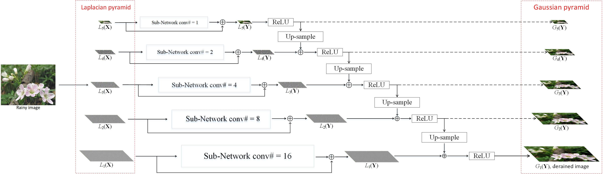

Xueyang Fu Borong Liang Yue Huang Xinghao Ding John Paisley
IEEE Transactions on Neural Networks and Learning Systems (T-NNLS), 2019.
Abstract: Existing deep convolutional neural networks have found major success in image deraining, but at the expense of an enormous number of parameters. This limits their potential applications, for example in mobile devices. In this paper, we propose a lightweight pyramid of networks (LPNet) for single image deraining. Instead of designing a complex network structure, we use domain-specific knowledge to simplify the learning process. Specifically, we find that by introducing the mature Gaussian-Laplacian image pyramid decomposition technology to the neural network, the learning problem at each pyramid level is greatly simplified and can be handled by a relatively shallow network with few parameters. We adopt recursive and residual network structures to build the proposed LPNet, which has less than 8K parameters while still achieving state-of-the-art performance on rain removal. We also discuss the potential value of LPNet for other low- and high-level vision tasks.
Paper: [pdf]
TensorFlow code: [Python code]
Real-wolrd rainy dataset: [download] (300 images, 50MB).
Framework:
